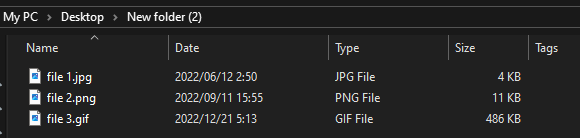

The most common of these are .png, .jpg, and .gif. The png format stores images with lossless compression, which means that the image quality is much higher than a jpg file which does not. Gifs are different in that they're files that store sequences of moving images, yet they're not video files.
Example of these three different image files in file explorer.
This image itself is a .png file!
These usually store written information such as text. the ones most commonly seen are .txt, .pdf and .doc. Files with the .txt extension can simply be opened in Windows by double clicking on them, as the operating system comes with a built in text reader in the form of notepad. However, files such as .doc documents are read using special programs such as Word, which may not always be on the machine. .pdf documents can be opened directly on your browser.
Files which contain information specifically for the cpu to run. Executable files have the .exe extension and are usually programs to use on your computer. These can be opened by just double clicking on them since they usually don't require any external application to run. A lot of programs you might download on the internet can come in the form of .exe files, which ties into the next section of the website where I will talk about useful programs to have.